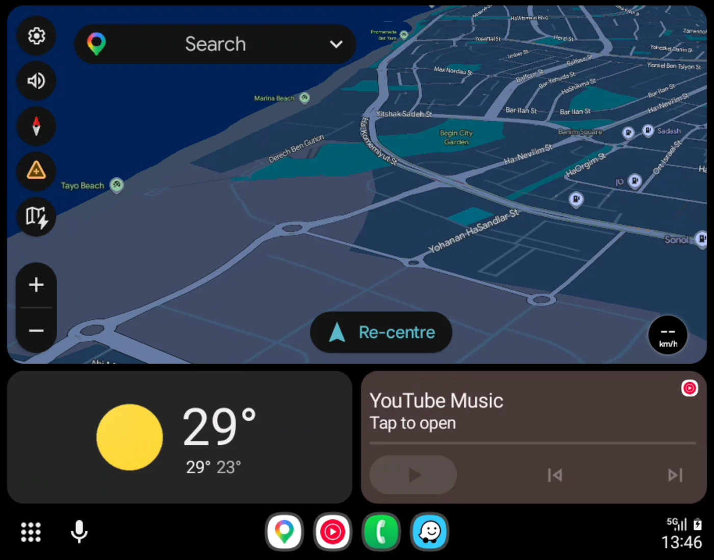
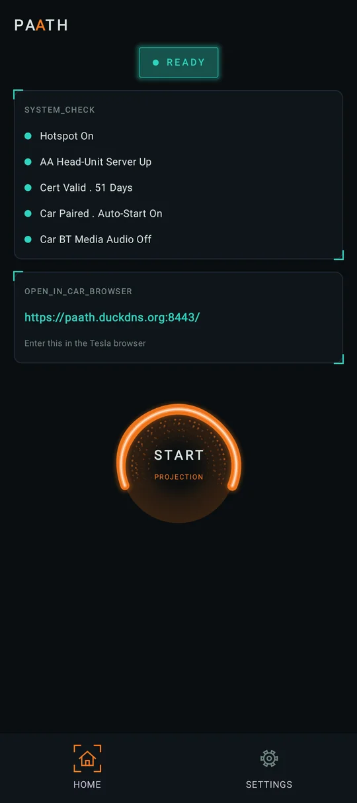
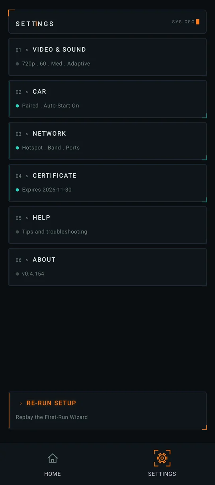
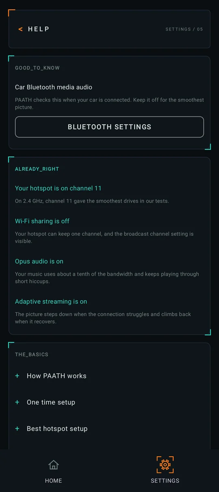
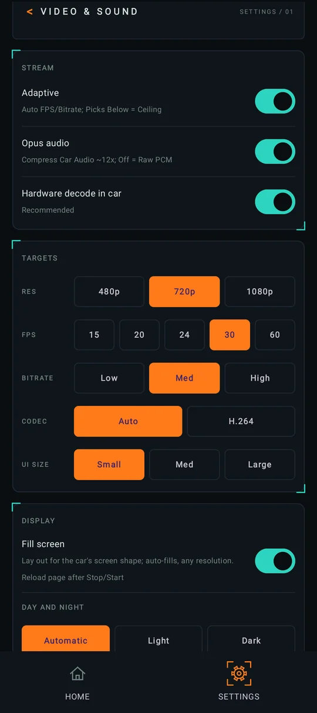

PHONE > HOTSPOT > CAR BROWSER
Android Auto, in your car's browser.
Your phone streams it over its own hotspot. No dongle, no cable, and free.
ANDROID 10+ . BUILT FOR TESLA


HOW IT WORKS
Three steps, no extra hardware
- 01
Your phone runs Android Auto
Just as if it were plugged into a car, with the navigation and music apps you already use.
- 02
Its own hotspot carries it
The car joins your phone's Wi-Fi hotspot. No dongle, no cable and no cloud service in between.
- 03
The car's browser shows it
Picture, sound and touch, on the car's own screen. Open the address PAATH shows once, and it is there.
SEE IT
What you get
Screens from a phone running PAATH.



WHAT YOU NEED
Before you start
Android 10 or newer
On the phone that rides in the car with you.
Android Auto
With its developer setting Start head unit server turned on. PAATH shows you how.
A Wi-Fi hotspot
On your phone, with mobile data on. The car leaves a hotspot that has no internet.
A car with a browser
Any modern web browser. Designed and tested for Tesla.
The step by step setup is on the Help page.
EARLY ACCESS
Join the test on Google Play
PAATH is in a closed test before it opens to everyone. Two steps, about a minute.
- 01
Join the testers group
Use the same Google account as the Play Store on your phone.
JOIN THE GROUP - 02
Become a tester
On the Play testing page, tap Become a tester. Then tap Download it on Google Play to install.
OPEN THE TESTING PAGE
- Only testers who tap Become a tester are counted, so please do both steps.
- Stay in the group for the whole test. Leaving removes you from it. Too many emails? Switch the group to digest or no email instead.
- Access can take a few minutes to arrive after you join.
OPTIONAL
Hands-free, if you like
Pair your car
PAATH starts when you get in. Turn on Stop when I leave the car and it also stops about 25 seconds after you go.
Hotspot on its own
With the free Shizuku app, PAATH turns your hotspot on when the car connects. With Stop when I leave the car on, it turns it off again when you leave.
PRIVACY
Nothing you do in PAATH leaves your phone
- The stream stays on your phone's own hotspot, between the phone and the car's browser. No cloud.
- No account, no analytics, no ads and no tracking.
- A diagnostic log reaches the developer only if you choose to send it.